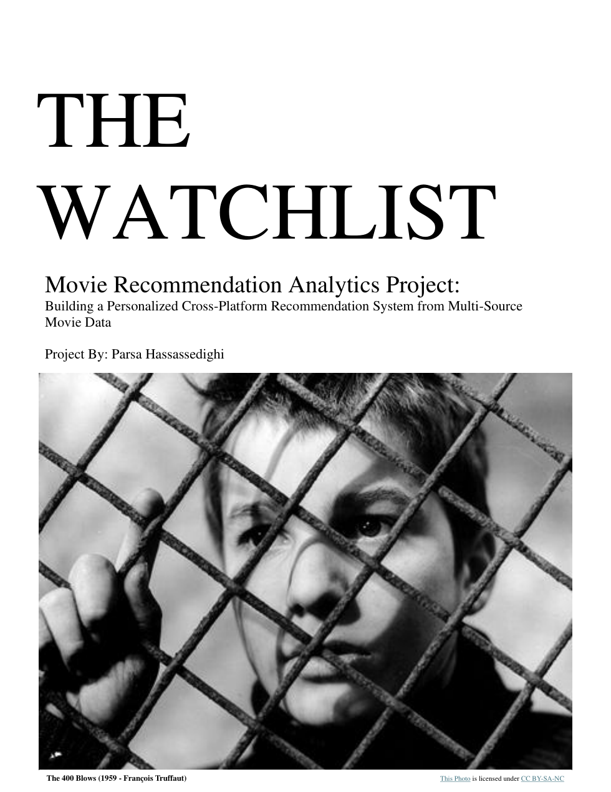
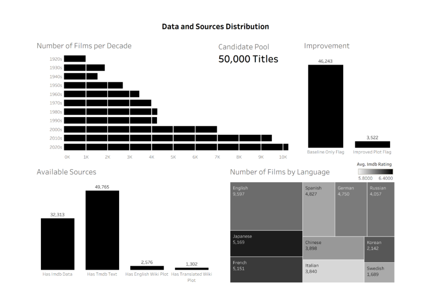

A personalized movie recommendation system built around a simple frustration: the movies worth discovering are often scattered across platforms, languages, decades, and niches. The Watchlist turns one user's rated films into a richer discovery engine using multi-source metadata, semantic embeddings, clustering, and quality-aware ranking.

Most streaming recommenders are useful, but they are usually locked inside one platform and optimized for broad engagement. That creates a gap for people whose taste crosses languages, decades, genres, and levels of popularity.
Standard platforms often over-recommend what is already popular or easy to categorize. They can miss older films, international cinema, independent titles, and emotionally similar movies that do not share obvious genre labels.
The Watchlist treats a personal watchlist as a data asset. Instead of asking “what is trending?”, it asks “what does this person's taste actually look like across theme, mood, style, context, and quality?”
The technical heart of the project is a multi-source enrichment pipeline. It combines a personal watchlist with TMDb metadata, Wikipedia plot summaries, IMDb rating signals, and a large 50,000-title candidate pool.
Every candidate is first enriched with TMDb fields such as title, original language, genres, overview, cast/director signals, keywords, and popularity metadata. This creates a reliable baseline for all rows.
Only weak or low-confidence rows are sent through the heavier Wikipedia enrichment layer. This keeps the system scalable while improving plot coverage for older, foreign, or sparse records.

A movie can match someone for different reasons: subject matter, emotional tone, cinematic style, cultural context, or some combination. The project therefore builds multiple text channels before embedding.
What the movie is about: relationships, memory, crime, coming of age, identity, power, loss, or other conceptual signals.
How the film feels: nostalgic, bleak, tense, warm, surreal, meditative, chaotic, or emotionally restrained.
How and where it belongs: genre, decade, language, director/cast clues, country context, and storytelling texture.
A film like Cinema Paradiso is not only “Drama, Romance.” The system builds richer text around childhood memory, film culture, nostalgia, Italy, projectionist friendship, and coming-of-age context — then embeds those representations separately so the recommender can match deeper similarity than genre alone.
The recommendation logic does not collapse the user into one average vector. It builds rating-centered preference signals and then segments the watchlist into soft overlapping taste streams.
One stream captured a stronger positive alignment, with representative titles such as Cries and Whispers, Autumn Sonata, Mother!, Howl's Moving Castle, and Nostalgia. Another stream grouped a different lane of taste around titles such as Scarface, The Departed, Public Enemies, John Wick, and Pulp Fiction.
| Signal | Purpose |
|---|---|
| overall taste | general fit |
| positive taste | what to seek |
| negative taste | what to penalize |
A pure similarity system can recommend weak films that happen to match surface-level taste. A pure popularity system can erase the user's personality. This project combines both sides.
Measures how strongly a candidate aligns with the learned user preference vectors and aspect-specific embeddings.
Checks whether a candidate belongs near one of the user's meaningful taste lanes instead of only matching the average profile.
Uses IMDb weighted rating, metadata richness, and text reliability to avoid low-quality or poorly supported recommendations.
The project produced an end-to-end recommendation workflow: data fetching, enrichment, cleaning, aspect text construction, semantic embedding, taste segmentation, scoring, and validation.
It reframes recommendation as a data product, not just a model. The system includes checks for coverage, ID integrity, enrichment quality, suspicious matches, and ranking behavior.